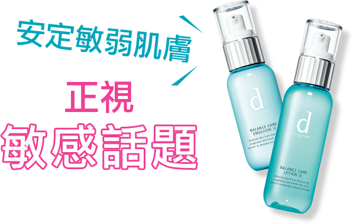

FG調查局 報告編號202002FG美麗調查局-敏感話題調查

雖然台灣有越來越多女生認為自己肌膚容易敏感
但總以為休息幾天就自然會好(?)
要知道氣溫劇烈變化、空氣汙染、內在壓力、錯誤保養觀念等等傷害肌膚健康因素層出不窮，
累積久了會讓妳變成敏感肌鐵粉！
FG特別設計調查問卷邀請1,178位敏感肌鐵粉
大聲說出敏感話題！
本調查問卷發送2019/12/20~2019/12/27(共7天)
受測者基本資料
性別
女性
98.1%
男性
1.9%
膚質
乾性
13.7%
中性
5.1%
油性
7.1%
混和性
74.1%
年齡
18~22歲
8%
23~25歲
15%
26~30歲
26%
31~35歲
21%
36~40歲
15%
41~45歲
9%
46歲以上
6%
職業
學生
4%
白領族
48%
藍領族
4%
服務業
17%
自由工作者
10%
家管
9%
其它
7%
薪資收入
20,000以下
14.8%
20,001~30,000
24.8%
30,001~40,000
30.9%
40,001~50,000
18.5%
50,001~100,000
10.1%
100,001以上
0.9%
Q4
請問通常造成您肌膚敏感的原因是？

季節變化
82.8%
82.8%
錯誤的清潔保養
20.9%
用了不適合的保養品
54.6%
用了不適合的化妝品
24.8%
作息不正常
60.3%
不當飲食
34.8%
壓力太大
54.6%
其他
2.3%
Q7
請問您覺得適合敏感肌的保養品應該要有哪些特點？
低刺激配方
(無香料、無色素、無防腐劑..等等)
92.3%讓肌膚油水平衡
64.8%
足夠的滋潤度
44.8%
能快速吸收
38.4%